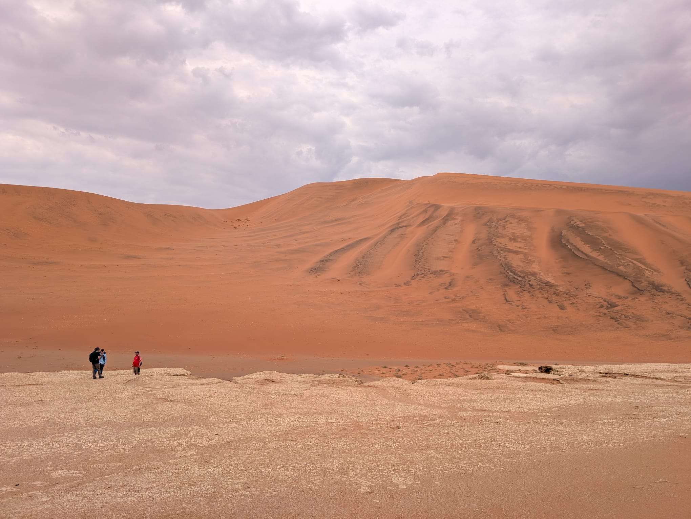
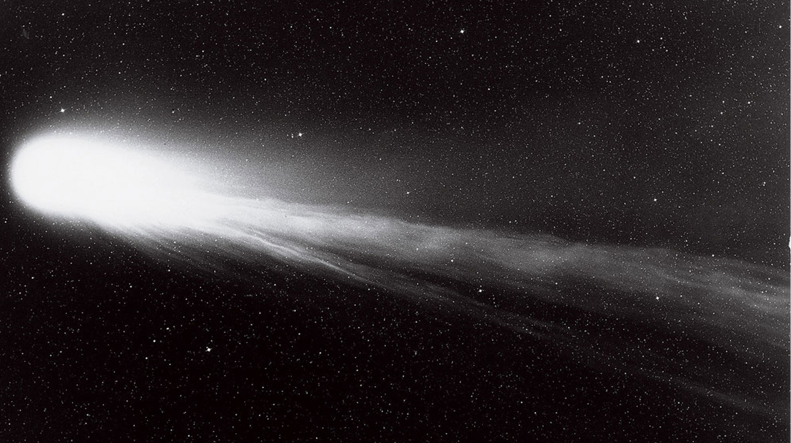
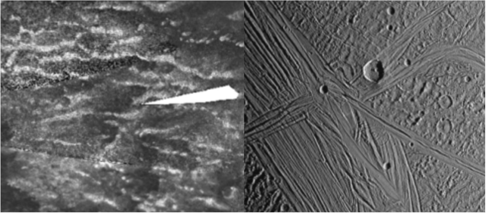
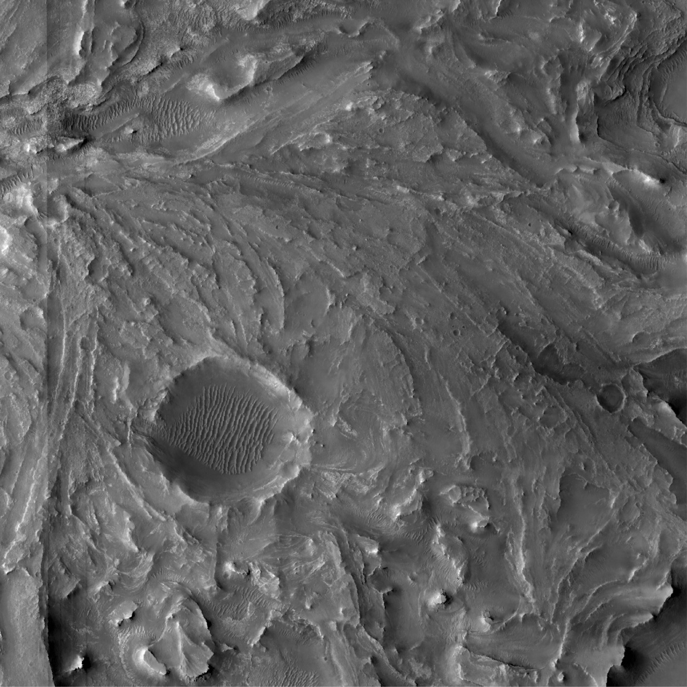

Spacecraft exploration of our solar system has revealed a great diversity of planetary surfaces. Throughout the solar system, we have discovered process both familiar to those here on Earth but also very new process that are typically not thought of as important in terrestrial geomorphology. From the arid, ancient landscapes of Mars, to Titan's active rivers and climate, to the massive nitrogen glaciers of Pluto, each of these worlds provide us a unique opportunity to study how climate governs the long-term development of landscapes.
So how do we fit in? Broadly, our research group seeks to understand the full suite of processes responsible for shaping planetary surfaces and climates, leveraging this broad spectrum of environmental, mechanical, and chemical differences that we find across our solar system. And we don't want to just stop there. The ultimate aim is to then take what we learn from these various planetary worlds, and use some of that knowledge to better understand what's happening here on Earth, either today or in the distant past!
Much of our work to date has attempted to unravel the landforms on both Saturn's largest moon Titan and the Jupiter Family Comet 67P/Churyumov-Gerasimenko (67P). As we can't reasonably restrict ourselves to just two worlds, we also have projects that are looking at the surfaces of Mars, Triton, Europa, Pluto, Earth, and yet more comets; all under the same umbrella of trying understand the full suite of processes responsible for shaping planetary surfaces and climates. We like to think of each of these planetary landscapes as massive, natural experiments, which are freely offering us the chance to observe both the familiar and the alien. The beauty of them though is that they are on global scales, compared to the far smaller (and more complex) experiments we experience on Earth. So, while Titan and 67P are each amazing worlds, we also want to explore as many unique environments as time (and resources of course) allows!
To answer these many questions, we employ many of the quantitative techniques and methods common to terrestrial geomorphologists. Historically in the planetary sciences, this knowledge has frequently been transferred from Earth to Mars, and our aim is to apply these techniques across the rest of the solar system. These methods include developing simple analytical models, the use of numerical simulations and laboratory studies that allow us to experiment with many processes (both familiar and exotic) over a range of spatial and temporal scales, field work to go and explore different landscapes, and, of course, analyses of new spacecraft data through participation in the operation and development of yet more missions.
Of course, our group and interests are growing. Titan and comets are fascinating worlds, but there is so much else out there for us to explore. Browse below if you want to learn more!

Titan Hydrology 🌊
- Where are Titan's river deltas? Should we "expect" them to be there?
- Are there new dynamics at river–sea interfaces we haven't had to consider on Earth?
- Are there new dynamics within Titan's rivers that affect sediment transport and river profiles?
- How do you form Titan's small lakes? How interconnected are they?
- How do fluids move between and within Titan's seas?

Comet Surface Evolution ☄️
- How does 67P's surface evolve over seasonal timescales? What about geological ones?
- How are ice and dust mixed within 67P, and what does that imply for how cometary "rocks" formed in the protoplanetary disk?
- How is sediment generated, and then transported across 67P?
- Does 67P lose mass rapidly, or gradually? How does cometary activity fade?
- How generalizable is 67P to other comets?

River–Dune Morphodynamics 🏖️
- How do rivers modify dune patterns — and how do dunes modify river morphology and long profiles?
- What do landscapes like the Namib Sand Sea record about global climate patterns?
- How are rivers actively modifying sand sea margins?
- What was the paleoclimate around the Namib, and how did it affect early humans and life?
- Titan has the same exact setup — do its river–dune patterns tell us of a drying world?

Primitive Volatile Retention ❄️
- Can you retain primitive ices like CO over the age of the solar system? If so, how — and where in such objects are ices retained?
- What even is "primitive"? Is any information from the planet-formation era preserved?
- What does this imply for large heliocentric outgassing or interstellar comets?
- Can we predict which ices come off when, for how long, and how much?
- Are there implications for building the large-scale topography on comets?

Icy Moon Geophysics 🧊
- Why is Titan the only icy world with mountain belts, despite active erosion? What role do clathrates play?
- How does methane make its way through Titan's thick elastic shell?
- How does the inclusion of salts affect the freeze-out rate of ice shells?
- If Titan doesn't have an ocean, how quickly has it frozen out — especially given recent dynamical excitement in the Saturn system?

Mars, Venus & More
- What has softened hillslopes on Mars, and what can they tell us about its changing climate?
- What do Mars' river deposits record about changing lake levels? Are we sure we're always looking at deltas?
- What can Venus' canali reveal about how its topography was constructed?
- Like Titan's lakes, how interconnected were Mars' crater lakes through the subsurface?
- Can we build new tools that permit wider use of data acquired at small bodies?